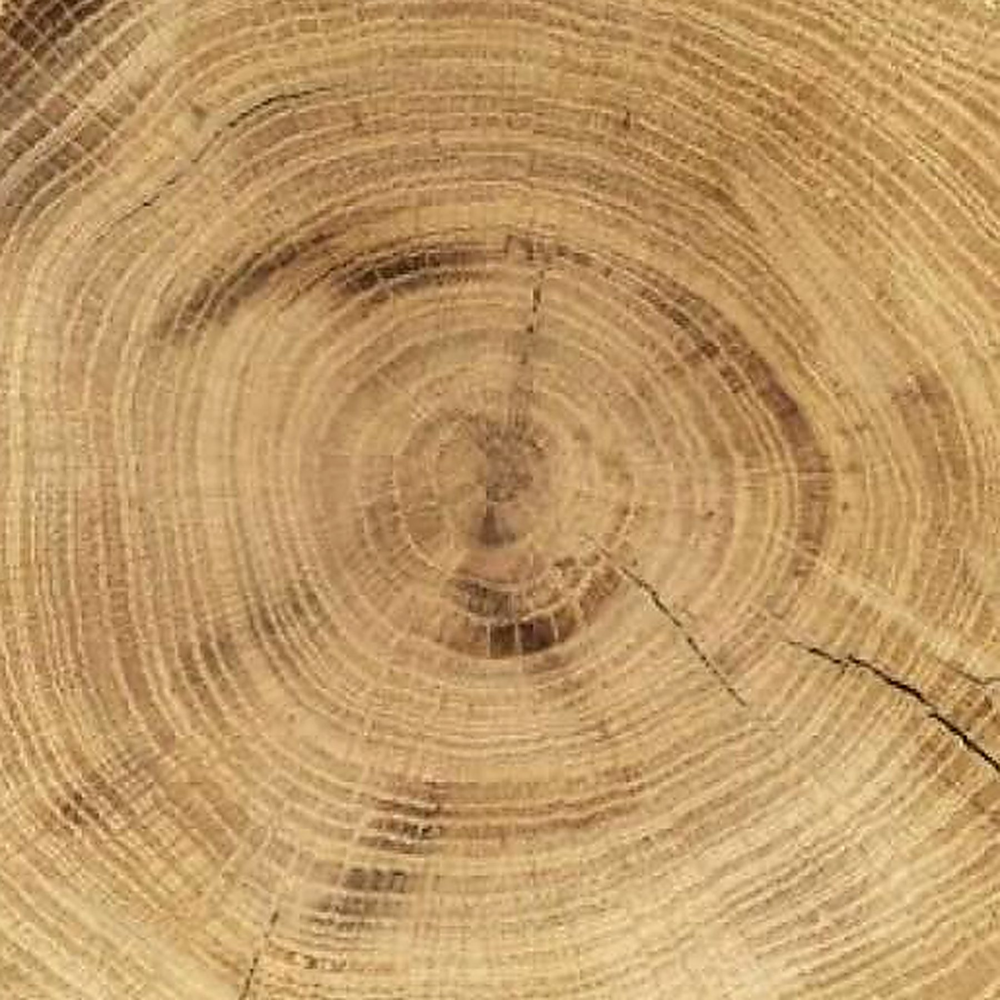
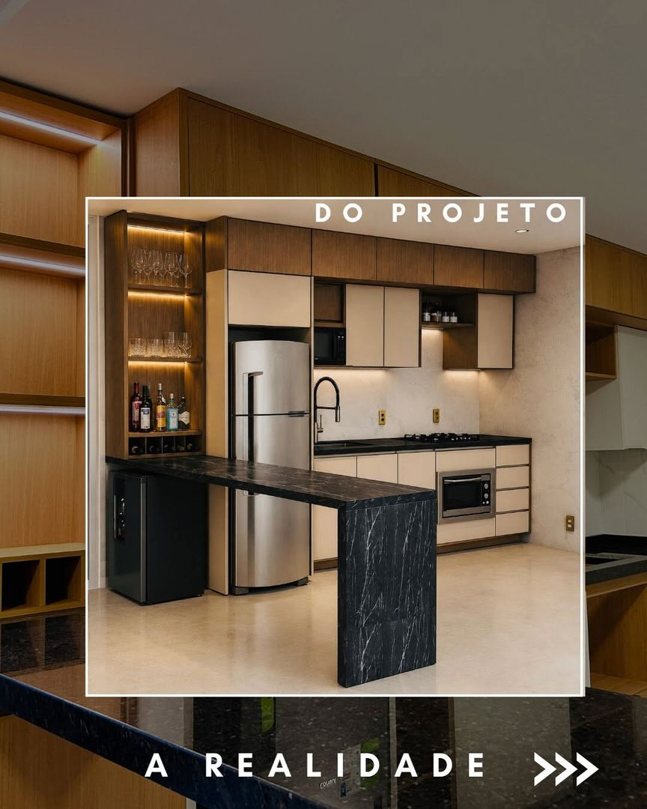
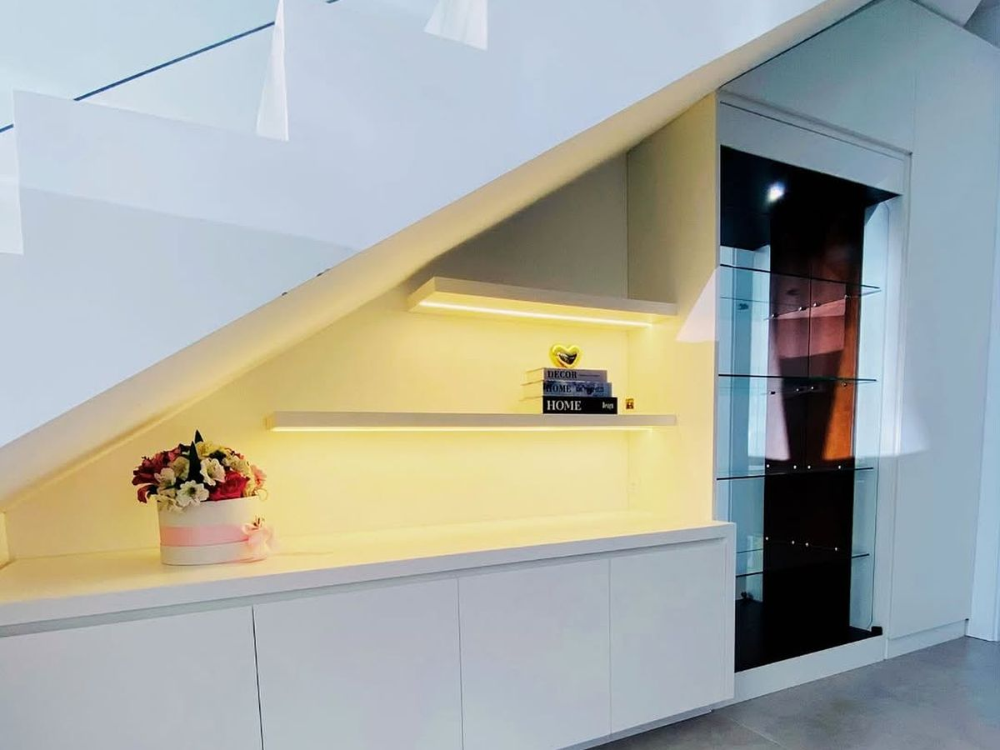

Residencial
- Casas
- Apartamentos
- Casas de praia
Cozinha, quartos, closet, área gourmet ou a casa inteira, desenhados para a rotina de quem mora.

Marcenaria sob medida
Ambientes planejados em MDF premium, da cozinha à casa inteira, com detalhes em madeira maciça.
Projetos completos
Para a Madê, um móvel bem feito não disputa atenção: ele acompanha a casa. Cada projeto começa na madeira e termina na sua rotina.
01Projetos
Cada ambiente é desenhado para a casa onde vai morar. Projetos que saíram da oficina da Madê, com as palavras de quem fez.
Toque no coração das fotos que você gostar: elas vão junto no seu pré-orçamento.
02MDF premium
A maior parte dos planejados da Madê é feita em MDF. Explore os padrões da Arauco e da Duratex: cores sólidas, amadeirados, madeiras brasileiras, alto brilho e texturas.
Chapa de fibra de madeira revestida: o material da maioria dos móveis planejados, com centenas de padrões possíveis.
Dos tons lisos e foscos aos amadeirados de carvalho, nogueira, freijó e cumaru.
Arauco e Duratex, as mesmas marcas dos projetos que a Madê publica.
Cores aproximadas na tela. Padrões e disponibilidade seguem o catálogo vigente de cada fabricante; a Madê leva o mostruário físico para você ver e tocar. Arauco e Duratex são marcas dos seus fabricantes.
03Monte seu ambiente
Combine os acabamentos que a Madê usa nos projetos e veja o ambiente mudar. Gostou? Mande a combinação junto com o pré-orçamento.
Ilustração para inspirar: as cores são aproximadas. A Madê leva as amostras reais e apresenta o projeto em 3D.
Paletas de projetos da Madê
04Para quem a Madê projeta
Cozinha, quartos, closet, área gourmet ou a casa inteira, desenhados para a rotina de quem mora.
Balcões, recepções, expositores e estações de trabalho que trabalham pela sua marca.
Quartos, recepção e áreas comuns com a resistência que o litoral pede e a identidade que o hóspede lembra.

05Como funciona
Você conta o que precisa aqui no site ou no WhatsApp. A Madê entende o espaço, a rotina e o que não pode faltar.
Com as medidas do espaço, cada ambiente é desenhado sob medida e apresentado em 3D: proporções, cores e materiais ajustados com você antes de qualquer corte.
A peça nasce na oficina da Madê e chega pronta para a montagem, com o cuidado de quem sabe que você vai ver o resultado todos os dias.

06A Madê
A Madê faz ambientes planejados em MDF premium, Arauco e Duratex, com foco em projetos grandes: a casa inteira, pousadas e hospedagens, lojas e escritórios, obras com arquiteto. Cada ambiente é desenhado em 3D, produzido e montado com atenção ao que só se nota de perto. A madeira maciça entra como detalhe, onde faz diferença.
“Mais do que móveis, histórias.”
Quem já tem um projeto da Madê
07Contato
Faça o pré-orçamento em dois minutos ou chame direto no WhatsApp. A Madê responde com o próximo passo: uma conversa e a medição do espaço.